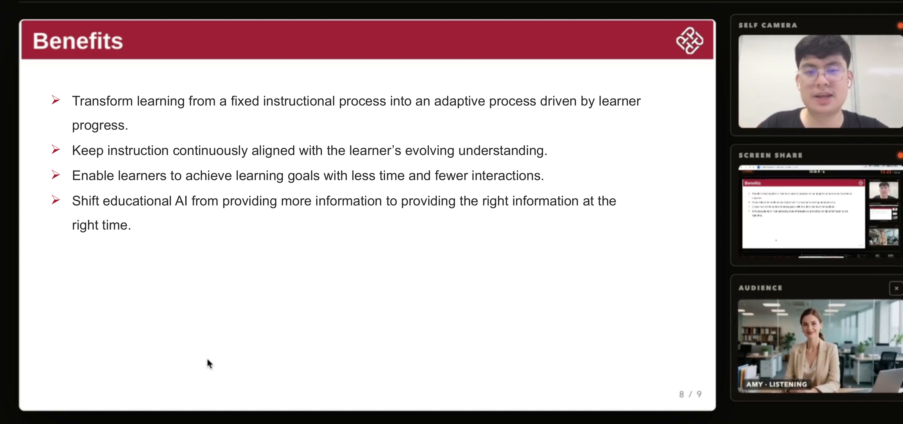
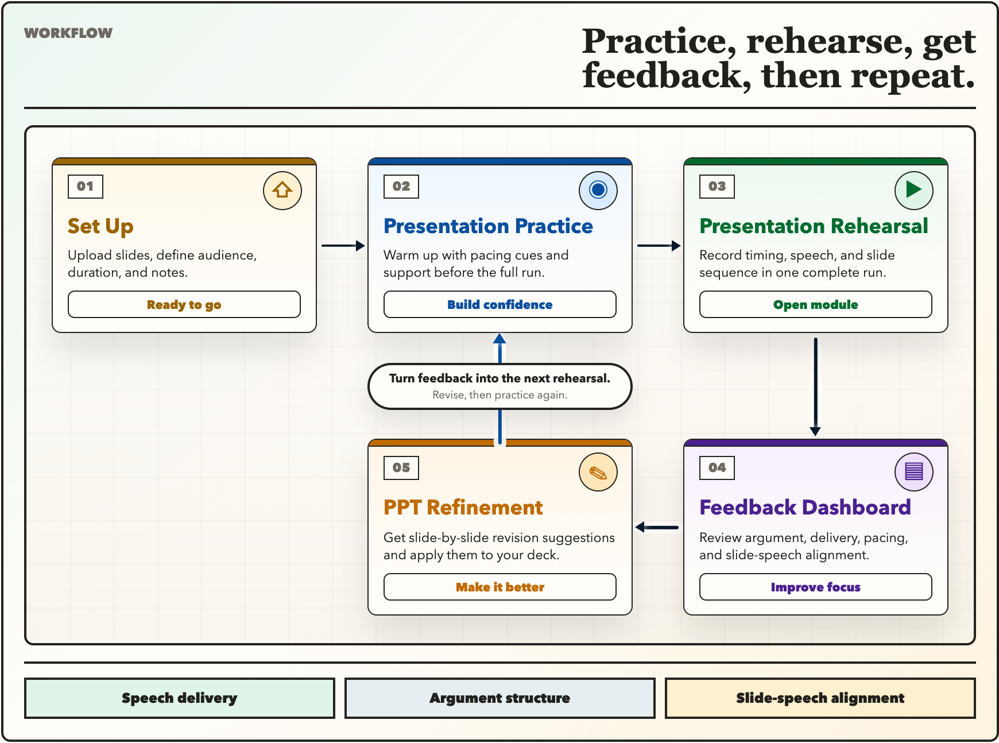
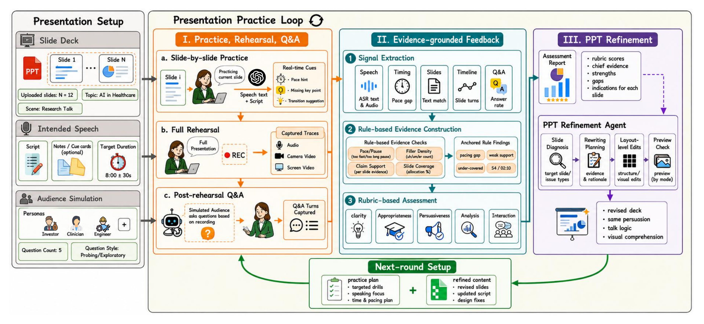
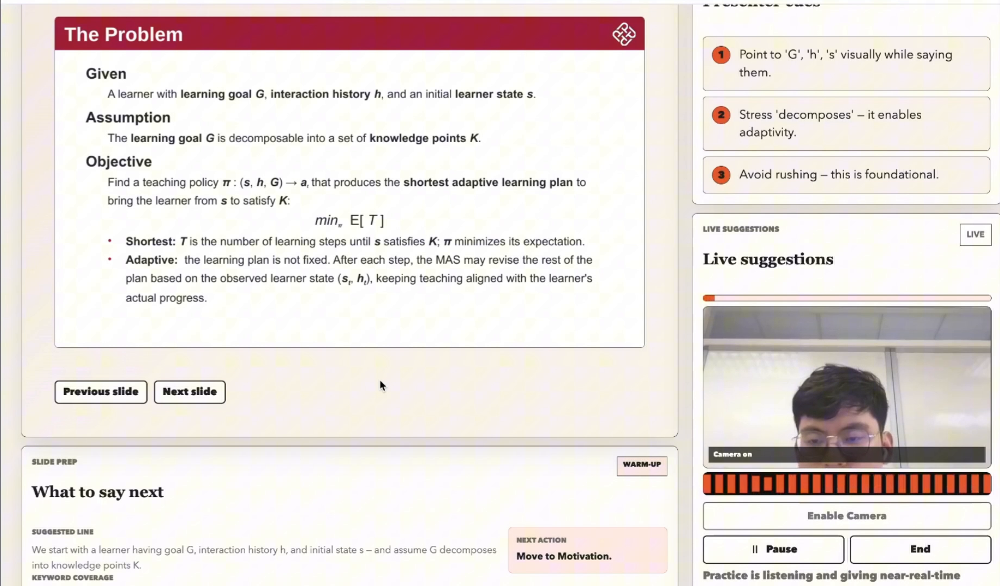

PolyPresentation: A Multimodal AI Platform for Slide-Aware Iterative Presentation Practice
The Hong Kong Polytechnic University, Hong Kong, China

Watch the demoAbstract
Presentations are essential for students, researchers, and professionals to communicate ideas persuasively, yet delivering them effectively requires repeated practice that coordinates content, delivery, visual materials, and audience interaction. Existing AI-assisted rehearsal tools provide scalable feedback, but they often treat presentations as single-run delivery performances, offering limited support for linking feedback to the slide deck or planning what to practice in the next iteration. To address this gap, we introduce PolyPresentation, a multimodal AI platform for slide-aware iterative presentation practice. PolyPresentation organizes slide-by-slide practice, full rehearsal, audience Q&A, and feedback into a unified practice loop, using slide-grounded evidence to help presenters diagnose performance issues and prepare for subsequent practice. We evaluate PolyPresentation through a rubric-based comparison with four baseline systems on 20 academic presentation rehearsals, and additionally assess its alignment with human ratings. Results suggest that PolyPresentation provides more actionable, context-aware, and practice-oriented support for improving presentations. The demonstration video is available at https://youtu.be/MmWj9O_PJxw.


System design
Presenters practise individual slides before rehearsing the full talk and answering audience questions. The platform links speech, timing and slide content to identify moments to revisit. Its report separates revisions to the presentation from exercises for the next rehearsal.

Interface examples


Evaluation
The study compared feedback from PolyPresentation and four baseline systems on 20 academic presentation rehearsals. It also compared platform scores with human ratings across five rubric dimensions.
Agreement with human ratings
| Pearson correlation | 0.836 |
|---|---|
| Quadratic weighted kappa | 0.830 |
| Mean absolute error (0–10 scale) | 0.34 |
Feedback quality
| Coverage | 8.15 |
|---|---|
| Actionability | 7.49 |
| Weighted overall score | 7.54 |